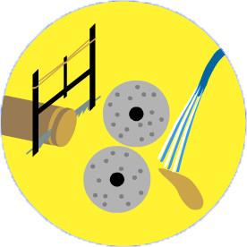
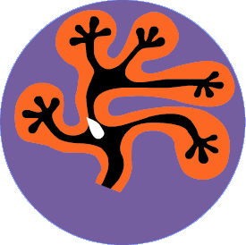
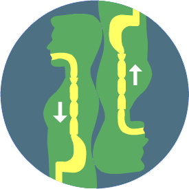
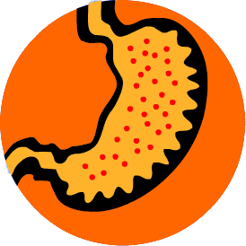

| HOMEPAGE | SISTEMI ED APPARATI | FASI DELLA VITA | ||
| HOMEPAGE | SISTEMI ED APPARATI | FASI DELLA VITA | ||
Raramente gli alimenti si trovano in natura in forma direttamente assimilabile dall'organismo, per cui quest'ultimo deve prima sottoporli a dei processi chimico-fisici per procedere alla loro assimilazione.
La digestione degli alimenti consiste in una serie di processi biochimici e meccanici che trasformano le complesse molecole del cibo in molecole semplici e assorbibili.
L'apparato digerente è quella parte dell'organismo umano che ha il compito di introdurre, digerire ed assorbire i principi nutritivi contenuti negli alimenti, e di eliminare i residui non utilizzabili sotto forma di feci.
L'apparato digerente è formato da un lungo tubo (tubo digerente o canale alimentare) della lunghezza di circa 12 m, aperto all'esterno alle sue due estremità: la bocca e l'ano. Questo tubo è costituito da una serie di organi cavi a cui sono connesse diverse ghiandole.
Nel tubo digerente si distinguono vari tratti: la bocca, la faringe, l'esofago, lo stomaco e l'intestino, a cui sono collegate numerose ghiandole: le ghiandole salivari, il fegato, il pancreas, le ghiandole dello stomaco e dell'intestino
|  |
|  |
|  |
|  |
Alimentazione
L’organismo umano nei suoi processi vitali consuma continuamente energia e usura le sue strutture.
Nello stesso tempo espelle sostanze di rifiuto che provengono sia dalla trasformazione delle sostanze alimentari introdotte, sia dall’usura dei tessuti e degli organi (le cellule che si deteriorano e muoiono e che vengono sostituite da nuove). Pertanto è necessario assorbire dall’ambiente esterno le sostanze energetiche (per il metabolismo) e plastiche (che ricostruiscono le parti usurate).
L'alimentazione è quindi l’assunzione, attraverso il cibo, delle
Per alimentazione bilanciata o equilibrata si intende un modo di alimentarsi corretto sia dal punto di vista quantitativo che qualitativo. L'alimentazione equilibrata ha la finalità di garantire un apporto adeguato di energia e di nutrienti, prevenendo sia carenze che eccessi (entrambi dannosi). Per essere equilibrata l'alimentazione deve anche essere varia. In questo modo, infatti, è più probabile che vengano assunti nelle giuste quantità tutti i nutrienti di cui l'organismo ha bisogno.
La corretta alimentazione è fondamentale per una buona qualità della vita e per invecchiare bene.
Il modello alimentare seguito nei paesi dell'area del mediterraneo, la cosiddetta "dieta mediterranea", è ritenuto oggi in tutto il mondo uno dei più efficaci per la protezione della salute ed è anche uno dei più vari e bilanciati che si conoscano.
La dieta mediterranea è sinonimo di equilibrio perfetto e corretta proporzione tra i vari nutrienti: il fabbisogno energetico giornaliero (espresso in Calorie/giorno) è suddiviso in queste proporzioni (relative alle Calorie contenute, non al peso degli alimenti):
Sulla base di questo modello è stata realizzata la piramide alimentare, utile per comprendere l’importanza dei vari alimenti e la quantità giusta da assumere. La piramide alimentare giornaliera si articola in 6 piani, in cui sono disposti in modo scalare i vari gruppi di alimenti. Ciascun gruppo deve essere presente nella nostra dieta in modo proporzionale alla sua grandezza. Alla base della piramide si trovano gli alimenti che possiamo utilizzare più liberamente, al vertice troviamo che invece è meglio limitare per prevenire il sovrappeso e le patologie che ne derivano.